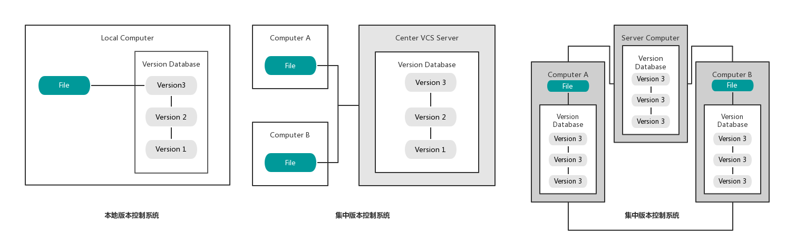
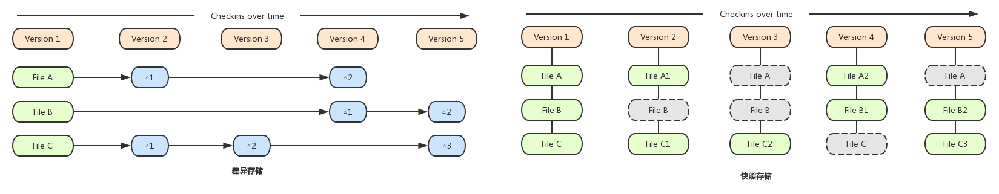

第一部分 Git基础知识
1.1概述
- 在实际项目开发过程中，不可能是由多个人共同负责一个项目，需要进行团队合作开发，需要将代码进行同步更新
- CVS: 最开始使用CVS进行版本控制，但是CVS设计并不完善，除了需要保存真实数据外还需要保存一些非必须的数据文件
- 版本控制发展历程:

- 本地版本控制系统: 复制整个项目工作目录来保存不同的版本，在本地使用简单数据库记录文件的修改，简单易用但是不易跟踪数据和恢复数据
- 集中版本控制系统: 服务器保存文件修改历史，客户端通过网络连接服务器，取出最新文件或者将本地提交更新到服务器，版本库只保存在服务器中
- 分布式版本控制系统: 版本库不仅仅保存在服务器中，每个客户端都有一份完整的拷贝，主服务器出现故障通过任一客户端都可以进行版本的恢复
- git特点:
- 快照存储，而不是比较各个版本的差异进行差异存储

- 断网同样可以照常工作
- 分支切换的速度非常快
1.2 在Windows环境下安装Git
- Cygwin模拟环境: 模拟了Unix系统调用API，在Window下可以运行Linux工具和shell命令
- Wine模拟环境: 模拟了Windows的系统调用API，可以在Linux下运行Windows应用程序
- Msysgit: Git的Windows版本，将git和cygwin一起打包，集成了Git所需要的运行环境和组件，直接安装即可
1.3 在Linux环境下安装Git
- 自动安装命令
- Ubuntu\Debian环境下安装git:
apt-get install git(git-core)
- Fedora\RedHat环境下安装git:
yum install git
- Mac环境下安装git:
sudo brew install git
- 源码包安装
1.4 仓库的创建和配置
- 创建一个仓库:
git init
- 新建一个工作区文件夹，在shell中进入到当前工作区后使用创建仓库命令后会在当前工作区生成隐藏文件夹".git"
- .git文件夹成为版本库，版本库中存放着版本信息以及一系列配置内容
- git配置
- 配置姓名:
git config --global user.name "isyangyuhao"
- 配置邮箱:
git config --global user.email "isyangyuhao@gmail.com"
- 配置差异颜色显示:
git config --global color.ui true
- 设置命令别名:
git config --global alias.alias_name name
- 配置命令自动补全
- 配置参数选项
--global 修改全局配置文件，去配置~/gitconfig--system 修改所有用户的配置文件，去配置/etc/gitconfig- 无参数: 修改本仓库配置文件，去配置.git/config
侧栏导航